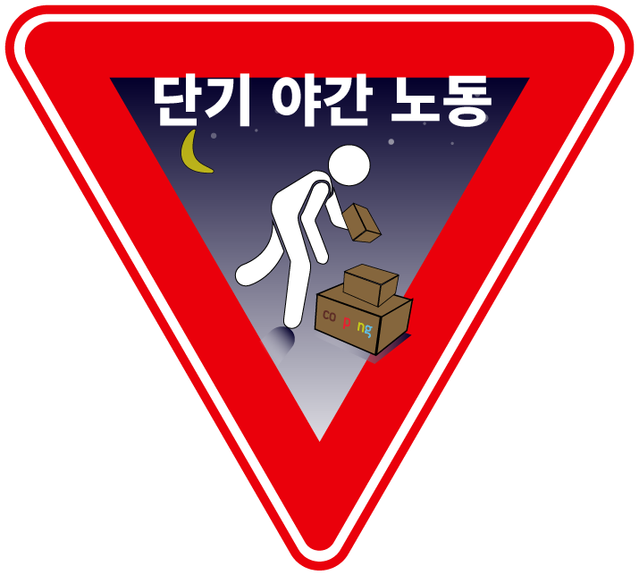
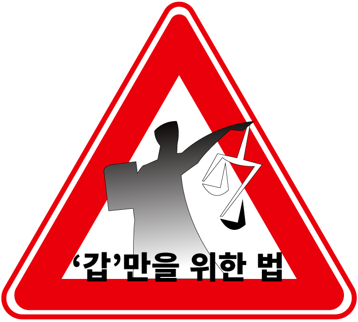

"도난방지용이라면서 사무실에 CCTV를 설치하고는 정작 직원들을 감시하는데 사용했습니다."
"회사 대표가 직원 동의도 안구하고 사무실에 폐쇄회로(CCTV)를 설치했습니다."
노동자는 '감시'당하고 있다? : 감시 자본주의의 시대의 도래
실제 CCTV를 비롯한 감시기술은 갈수록 첨예해지고 있다.
CCTV가 더욱 소형화되고 저렴해지면서 직장 내 사각지대가 사실상 없어졌으며,
최근 개발된 제품은 마이크와 적외선 센서까지 탑재해
직원들의 말과 동선까지 추적할 수 있다.
일각에서는 직장 및 일상 공간에서 감시기술이 계속 확산할 경우
'감시 자본주의'사회가 도래할 수 있다며 우려를 표한다.
'감시 자본주의'는 쇼사나 주보프 미 하버드대 경영대학 명예교수가 창안한 용어로,
인간 행동이 만드는 데이터를 기업이 직접 수집해 수익을 창출하는 자본주의 사회를 뜻한다.
주보프 교수는 지난해 출간한 '감시 자본주의의 시대'라는 책에서
오늘날 우리를 둘러싼 대부분 디지털 제품에 사실상 감시용 센서들이 설치되어 있다면서
"구글, 페이스북 등 거대 기업들은 우리의 동의없이
대량의 데이터를 다른 회사에 넘기고 있다"고 주장했다.
이어 "과거 인간은 상품과 서비스를 직접 생산하고 소비하는 주체였지만,
감시 자본주의 시대의 인간은 기업에 정보를 제공하는데
필요한 데이터를 만들어낼 뿐인 존재로 축소된다"며 "이런 사회에서 정보와 지식을 갖춘 인간은
그렇지 않은 인간에 비해 역사상 비교 대상을 찾을 수 없을 정도의 권력 을 누리게 될 것"이라고 경고했다.

"초단기 불안정 고용이 노동자 심야노동으로 내몰아"
"심야 수당이 붙으니까 그것 때문에 하는 거지. 그래서 일을 하는 거에요."
노동자는 강요된 선택에 따라 간다: 쿠팡 물류센터 노동의 현실
"배송비의 시대를 끝내러 왔다. 로켓배송 상품 무조건 무료배송"
쿠팡의 혁신, 로켓배송.
그걸 가능하게 만든 건, 속도 전쟁 에 내몰린 저임금 노동자들이다.
쿠팡은 개별 노동자들의 시간당 작업량을 끊임없이 측정하고, 속도 전쟁으로 내몰고 있다.
쿠팡은 연장근무에 대한 강제는 없다고 말한다.
쿠팡은 "고인께 계약직근로자로의 전환을 적극 권유하였으며,
고인께서는 계약직 전환을 신청하지 않으셨습니다"라고 말한다. 맞는 말이다.
과도노동을 감수할 수밖에 없는 조건과 시스템을 마련했다면 물리적인 강제는 필요 없다.
하지만 쿠팡 노동자들은 '강요된 선택'하에 매일의 과도노동을 선택하고 있다.
'자유의지에 의한 자유로운 강제노동'이라는 역설이 작동되도록
쿠팡은 물류센터에서 노동을 지운다.
살아있는 노동에서 뽑아낸 데이터와 알고리즘이
노동의 자리에 권리를 박탈하며 다가오는 미래의 노예노동을 앞서 보여준다.

'노동자를 위한 법, 정말 맞는가?: 사회적인 작업중지권은 지금 바로 발동되어야 한다.'
산업안전법상 노동자가 위험한 작업을 안전조치가 이뤄질 때까지
거부할 수 있는 '작업중지권'이 있다.
모든 물류산업에 대해 사회적인 작업중지권을 발동해야한다.
관련 기업들이 '자발적'으로 노동자의 삶을 갈아먹는
과도노동을 중단하지 않는다면,
우리 사회에서는 기업에게 모든 이윤을 위한 작업을 중단시킬 수 있어야 한다.